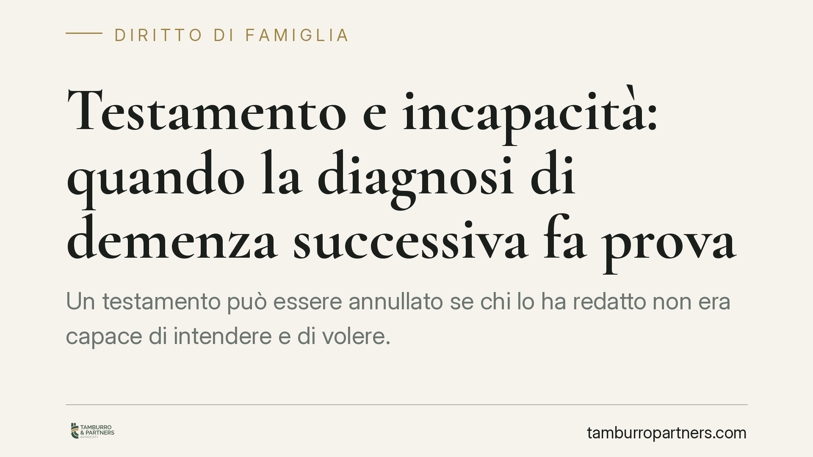

Testamento e incapacità: quando la diagnosi di demenza successiva fa prova
Un testamento può essere annullato se chi lo ha redatto non era capace di intendere e di volere. La giurisprudenza riconosce che una diagnosi di demenza accertata a breve distanza dalla sottoscrizione può valere come indizio grave della malattia già in atto, con effetti rilevanti sulla ripartizione dell'onere della prova tra chi contesta l'atto e chi ne beneficia.

Il caso e il principio
La questione ricorrente nelle cause successorie riguarda la capacità del testatore al momento della redazione dell'atto. Il tema diventa delicato quando, a pochi giorni dalla firma, viene accertata una diagnosi di demenza o di un analogo deficit cognitivo.
Secondo un orientamento consolidato della Cassazione, la vicinanza temporale tra l'atto e la diagnosi non è irrilevante: può costituire indizio della presenza della patologia già nel momento della sottoscrizione, soprattutto quando si tratta di una malattia a carattere abituale e permanente, come appunto le forme di demenza degenerativa.
> Nota sulla fonte. L'estremo dell'ordinanza citata dalla fonte di partenza riporta un anno non ancora verificabile alla data di questo contributo. Preferiamo quindi esporre il principio di diritto, consolidato e verificabile, senza attribuirlo a un numero di provvedimento non confermato.
Inquadramento normativo
La norma di riferimento è l'art. 591 del codice civile, che individua i casi di incapacità di disporre per testamento. Rileva in particolare il n. 3 del secondo comma: è annullabile il testamento di chi, al momento in cui lo ha redatto, era incapace di intendere e di volere per qualsiasi causa, anche transitoria.
Due precisazioni sono importanti. La prima: non occorre che il testatore fosse stato dichiarato interdetto o beneficiario di amministrazione di sostegno. L'incapacità rilevante è uno stato di fatto, da accertare in concreto con riferimento al giorno della sottoscrizione, e non uno stato formalmente dichiarato dal giudice.
La seconda riguarda l'onere della prova. Di regola, chi impugna il testamento deve dimostrare che il testatore era incapace al momento dell'atto. La capacità, infatti, si presume. Tuttavia, secondo la giurisprudenza della Cassazione (tra le altre, Cass. civ., Sez. II, n. 3934/2018 e la giurisprudenza successiva conforme), quando è provato che il testatore era affetto, in via abituale e permanente, da una malattia che comporta incapacità, la presunzione si inverte: si presume che l'incapacità sussistesse anche al momento del testamento. A quel punto spetta a chi vuole far valere l'atto dimostrare che è stato redatto in un momento di lucido intervallo.
Una diagnosi accertata a pochi giorni di distanza può concorrere a provare proprio il carattere abituale e preesistente della patologia.
Cosa cambia per chi è coinvolto
Per chi contesta il testamento, dimostrare la natura stabile della malattia è spesso più agevole che provare lo stato mentale di uno specifico giorno. La prova della patologia abituale sposta il peso probatorio sulla controparte.
Per chi beneficia del testamento, non basta invocare la presunzione generale di capacità: occorre dimostrare, con elementi concreti, che l'atto è stato formato in una fase di recupero delle facoltà. È una prova tecnicamente difficile, soprattutto nelle demenze a decorso progressivo, dove i margini di miglioramento sono limitati.
Un ruolo centrale lo gioca la tipologia di testamento. Nel testamento pubblico interviene il notaio, che attesta di aver accertato l'identità e la volontà del disponente; questo non impedisce l'annullamento, ma offre un elemento di valutazione. Nel testamento olografo, redatto di pugno senza intermediari, mancano riscontri esterni sullo stato del testatore.
Il profilo temporale
L'azione di annullamento del testamento per incapacità è soggetta a un termine preciso. L'art. 591, terzo comma, cod. civ. stabilisce che l'azione si prescrive in cinque anni dal giorno in cui è stata data esecuzione alle disposizioni testamentarie. È un dato da verificare all'inizio, perché il decorso del tempo preclude la domanda.
Cosa fare in concreto
- Ricostruire la cronologia clinica. È opportuno raccogliere cartelle cliniche, certificati e referti che documentino l'insorgenza e il decorso della malattia, in particolare nel periodo immediatamente precedente e successivo all'atto.
- Verificare il tipo di testamento. La distinzione tra olografo e pubblico incide sugli elementi di prova disponibili: la prassi suggerisce di valutarla fin dalle prime fasi.
- Individuare la data di esecuzione delle disposizioni. Da quel momento decorre il termine quinquennale: è il primo dato da fissare per capire se l'azione è ancora esperibile.
- Valutare la natura della patologia. Distinguere tra condizioni abituali e permanenti ed episodi transitori è decisivo per capire su chi graverà l'onere della prova.
- Rivolgersi a un professionista per una valutazione del caso specifico. Ogni situazione dipende da elementi di fatto che richiedono un esame individuale.
Nota di categoria
Il tema, pur toccando i rapporti familiari, appartiene propriamente al diritto delle successioni. La capacità di testare e la sua impugnazione si collocano in quest'area e seguono le regole proprie degli atti mortis causa.
---
Contributo informativo a cura di Tamburro & Partners - Avv. Giuseppe Tamburro. Non costituisce parere legale.
Ogni famiglia ha il suo equilibrio.
Separazione, divorzio, affidamento, assegno: se vuoi un confronto riservato su una specifica situazione, scrivi allo studio. Ti rispondiamo entro un giorno lavorativo.